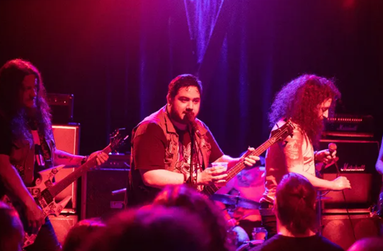

¿QUIÉNES SON THE BADNIKS?
The Badniks es una banda tributo argentina dedicada a interpretar en vivo la música de Sonic the Hedgehog, recorriendo desde temas clásicos hasta composiciones modernas. Su show combina arreglos rock/alternativos, secciones potentes al estilo Crush 40 y versiones propias que reimaginan las canciones icónicas de la saga.

En sus presentaciones tocan clásicos como Escape from the City, Studiopolis / Blue Spheres, Chemical Plant y muchos más, además de publicar contenido y presentaciones completas en YouTube e Instagram.

The Badniks es la banda oficial de la Sonic Fest, donde han tocado en espacios destacados de la escena argentina como el Club Cultural Matienzo y Uniclub, reconocido por recibir a artistas internacionales.

MIRÁ SUS SHOWS
(Hacé click en los títulos para desplegar los videos)
The Badniks en Sonic Fest Riders Party (23/11/2025)
The Badniks en Sonic Expo Fest (1/6/2025)
The Badniks en Sonic Adventure Fest (3/3/2025)
The Badniks en Sonic Fest fin de año 2024 (28/12/2024)
The Badniks en Sonic x Shadow Fest (23/09/2024)
INTEGRANTES
TIN GIOVINI – Guitarra y Voz

Soy Tin Giovini, guitarrista y cantante de The Badniks. Mi amor por la música nació con los juegos de Sonic. A los 10 años recibí mi primera guitarra en Navidad y desde ese momento no paré.
A los 16 formé mi banda de hardcore punk, Creative Fingers, con la que grabamos 3 EPs. En 2018 me uní a FAKA junto a Juan Fandiño (Flema), donde grabamos Volviendo a las Raíces. Luego seguí mi camino solista, con dos discos publicados (Illumina y Creative Fingers) y un tercero, EÖLÖ, próximo a salir.
Siempre fantaseé con tener una banda de covers de Sonic como hobby paralelo… y después de 16 años tocando esos temas en mi cuarto, finalmente se dio.

Seguime en: INSTAGRAM
THIAGOMII – Teclados

Soy Thiagomii, tecladista de The Badniks. Arranqué haciendo covers de videojuegos retro usando archivos MIDI y una notebook. Con el tiempo me enamoré de la música y me compré mi primer teclado MIDI.
Unirme a The Badniks fue algo súper espontáneo que me ayudó muchísimo a desarrollar cómo tocar en banda, entender la dinámica en vivo y ganar presencia en el escenario. Hoy estoy muy enfocado en mejorar mis composiciones y expandir mis habilidades con distintos instrumentos.

Seguime en: INSTAGRAM | YOUTUBE
COLMAN – Bajo

Qué onda wombats, soy Colman, bajista de The Badniks. Arranqué escuchando Deep Purple y Pantera por influencia de mi tío, y después me abrí a todo: jazz, rock progresivo, thrash, black metal… Mi primera banda fue de funk, pero buscaba algo más rápido y agresivo, así que formé Viñas del Thrash con músicos muy zarpados de la escena under.
La idea siempre fue la misma: generar locura y gedencia.
Cuando supe que The Badniks buscaba bajista, ni lo dudé. Ya los había visto en un evento y la energía que generaban en la gente era tremenda. Eso es lo que más amo de la música.
Ya con la banda, consolidamos un sonido agresivo, irreverente y siempre buscando subir el nivel y expandir el show.

Seguime en:
INSTAGRAM
Escuchá mi banda:
VIÑAS DEL THRASH
HERNI – Batería

La resiliencia del baterista es amar un armatoste ruidoso, incómodo y hermoso a la vez. Soy Hernán, baterista de The Badniks. Empecé de pibe rompiendo ollas y plásticos con palillos improvisados, hasta que pude estudiar en serio a los 13.
Entre idas y vueltas la batería se volvió mi cable al edén… o al abismo, según el género del tema. Pasé por varios proyectos, pero siempre con pasión, cariño por la música y por ustedes, que nos prestan sus oídos.
Aguante Berazategui, pa. Gracias por acompañarnos.